Introduction
The Biteway Customer Website is an SEO-friendly ordering website for your Biteway platform. Customers can discover restaurants and dishes, use the cart and checkout, track orders on a live map, manage their account, and sign restaurants up as partners.
It is an add-on: it needs the Biteway main item, version 1.0.0 or newer, installed on the same server. It uses the main item's database, settings and PHP packages, so it adds no server requirements of its own.
What's in the package
| Folder | Contents |
|---|---|
main/biteway-customer-web/ |
The add-on, with addon.json at its root. Its styles and scripts ship as sources in resources/; npm run build in your Biteway folder builds them. |
documentation/ |
This documentation |
Costs of third-party services: the website uses the services set up in your Biteway platform, on your own accounts, and you are responsible for any costs they charge. This includes payment gateway fees for online payments, text message charges for sign-in codes (Twilio, BulkSMSBD, or Firebase Phone Authentication beyond Google's free tier), Google Maps Platform usage if you choose Google Maps, your SMTP or email provider, and your hosting and domains, including restaurants' own web addresses and their HTTPS certificates. The Biteway Customer Website price covers the source code only.
Installation
The Customer Website installs into your Biteway admin panel. You then build its styles and scripts with one command in your Biteway folder.
Before you start
You need:
- A working Biteway main item, version 1.0.0 or newer, on the same server. The add-on runs inside it and uses its database, settings and PHP packages.
- A Super Admin account. Only a Super Admin sees Add-ons in the admin panel.
- Write access for the web server to the
addons/folder and thepublic/folder ofbiteway-backend. Installing copies the add-on intoaddons/customer-weband its styles and scripts intopublic/addons/customer-web.
Nothing else is needed: no Composer install, no new database and no new PHP extension. Its styles and scripts are built by the same npm run build you use for Biteway (see Build its styles and scripts).
Way 1: upload the add-on in the admin panel
- Sign in to the admin panel as Super Admin and open Add-ons.
- Under Upload an add-on, choose the zip you downloaded from CodeCanyon in Add-on zip and press Upload. Upload it as it is: the admin panel finds the add-on inside it. The zip can be up to 50 MB (your server's PHP upload limit must allow it too).
- The page says "Biteway Customer Website 1.0.0 uploaded. Install it to switch it on." and the add-on's card shows Not installed.
- Press Install and switch on. The card now shows On.
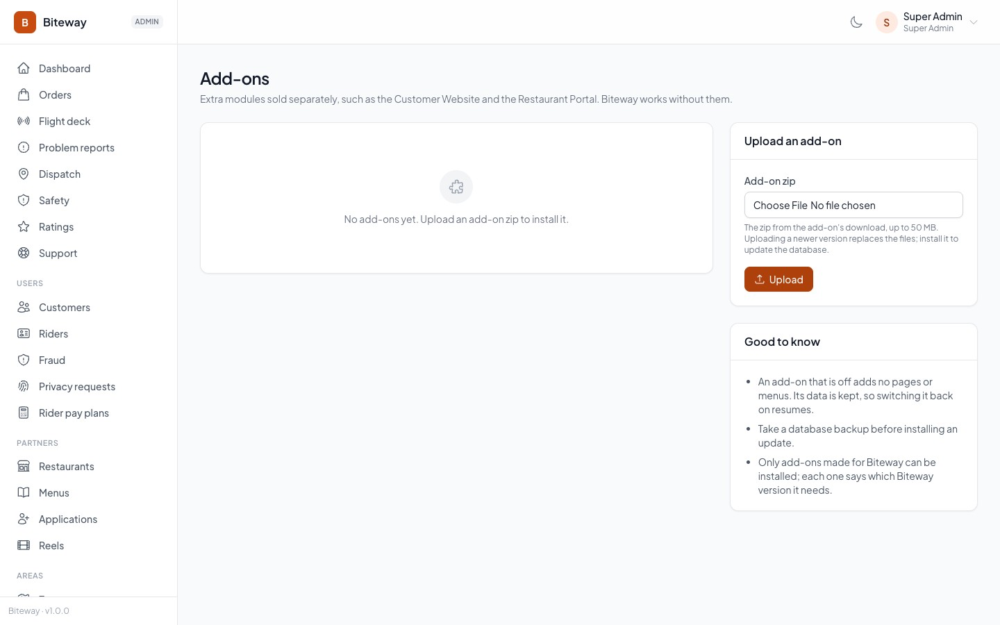
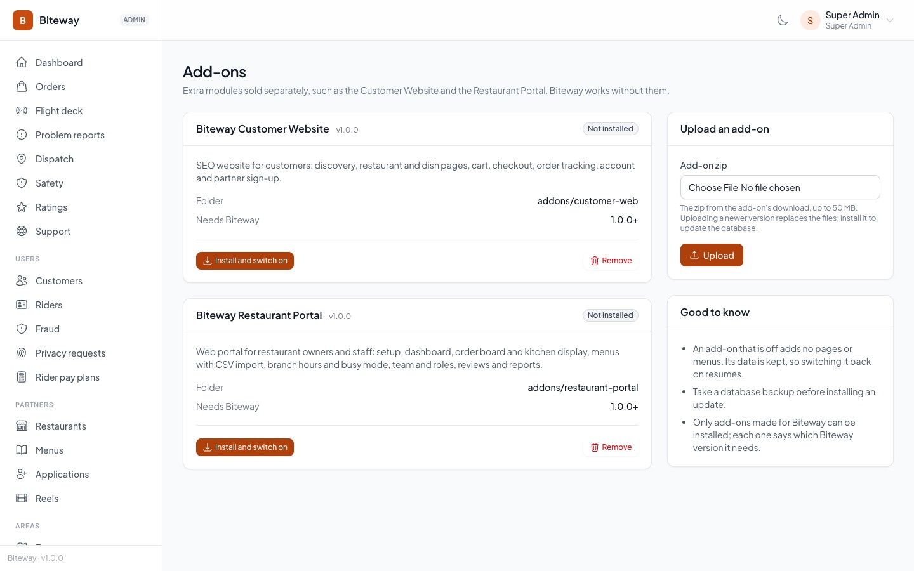

Way 2: copy the folder to the server
- Copy the
main/biteway-customer-web/folder into theaddons/folder ofbiteway-backend. - Rename it to
customer-web, so the path isbiteway-backend/addons/customer-web/addon.json. The folder must be named after the add-on; any other name shows "The folder must be named after the add-on slug (customer-web)." - Open Add-ons in the admin panel. The add-on appears as Not installed.
- Press Install and switch on.
The add-ons folder is biteway-backend/addons/ unless your .env sets BITEWAY_ADDONS_PATH to another folder.
Build its styles and scripts
The add-on ships its sources only. After installing it, and after each update, build its styles and scripts once. In the biteway-backend folder on your server, run:
npm run build
It is the same command you ran when you installed Biteway (it needs Node.js 20.19+ or 22.12+). It builds the admin panel and every installed add-on, and the new files are published on the next page load. Until you run it, the add-on's card in Add-ons says "Its styles and scripts are not built yet", and the website's pages load without their styles.
No terminal on your host? Build on your own computer: copy the add-on folder into the addons/ folder of a local copy of biteway-backend, named customer-web, run npm ci && npm run build there, then upload the add-on folder, including its new public/build/ folder, to biteway-backend/addons/ on the server.
What "Install and switch on" does
- Checks that your Biteway version is new enough. If not, the card shows Needs a newer Biteway and nothing is installed.
- Runs the add-on's database updates (version 1.0.0 adds no tables of its own).
- Copies its styles and scripts, once built, to
public/addons/customer-web. - Clears the route and view caches, and switches the add-on on.
Enter your purchase code
Once the add-on is installed, its card in Add-ons has a Purchase code field. Enter the purchase code from your Envato downloads page and press Save code. It is saved encrypted, and the field then shows only its last four characters. The website works while the code is empty.
Where the website is
The website answers at your site's root: https://your-domain/. The admin panel stays at https://your-domain/admin, and the apps keep using https://your-domain/api/... as before.
Before you go live, open Dashboard in the admin panel: the Go-live checklist gains the item "The website links to your terms and privacy policy" until you fill in both links (Settings).
Switching it off
In Add-ons, press Switch off on the add-on's card.
- The website's pages are gone at once, and
https://your-domain/goes back to the admin panel. - Nothing is deleted. Customers, orders, wallets and everything else belong to the main item and keep working in the apps.
- Press Switch on to bring the website back as it was.
Removing it
- Switch the add-on off first. Remove is not offered while it is on.
- Press Remove and confirm.
This deletes the add-on's files (addons/customer-web and public/addons/customer-web) and its entry in Add-ons, including the saved purchase code. Data in the database is kept, so installing the add-on again later resumes where you left off; enter the purchase code again then.
Settings
The website has no settings page of its own. It reads the main item's settings, so one change applies to the apps and the website together. Everything below is in the Biteway admin panel. Integrations, Payments and Firebase are open to the Super Admin only.
Name, logo, contact and legal links
| Setting | Where | On the website |
|---|---|---|
| Platform name | Settings → General → App names | Page titles, header, footer and search-engine tags |
| Customer, Rider and Restaurant app names | Settings → General → App names | The app names on the about and "Become a partner" pages |
| Logo, Favicon | Settings → General → Logo & colors | Header and browser tab. Without a logo, the header shows the name's first letter. |
| Primary color, Secondary color | Settings → General → Logo & colors | Buttons, links and highlights |
| Support email, Support phone | Settings → General → Support contact | Footer, help center and about page |
| Terms of service link, Privacy policy link | Settings → General → Legal | Footer, sign-in page and cookie notice |
Fill in both legal links before you go live, or publish terms and privacy pages under Content → Pages (below). Until you do, the Go-live checklist on the Dashboard shows "The website links to your terms and privacy policy".
Pages, home page and search engines
| Setting | Where | On the website |
|---|---|---|
| Terms, privacy and your own pages | Content → Pages | Published pages get their own address (/pages/…), appear in the footer column you pick and in sitemap.xml. A published terms or privacy page replaces the link in Settings → General → Legal everywhere. |
| The home page | Content → Homepage | The order of the sections, which show, their texts per language, a picture at the top, how many restaurants, featured promotions and a text block of your own |
| Search engines | Content → Search engines | Titles and descriptions of the main pages per language, the share picture, Google and Bing verification codes, and hiding the site while you set it up |
Languages
- The website offers the languages switched on under Languages. Visitors pick one in the header's language menu; it is remembered in a cookie.
- The default language is the one marked Default under Languages (Make default changes it). Without a choice, visitors get their browser's language when it is switched on, otherwise the default.
- Arabic, Hebrew, Persian and Urdu are shown right to left.
- The website's own texts come in English, Bangla and Arabic. Any of them can be reworded under Languages → Texts, tab Biteway Customer Website. Restaurant names, menus and other content show the translations you enter in the admin panel.
Areas, restaurants and menus
The website shows what the main item holds; there is nothing to copy over.
- The delivery areas on the home page and the about page are the active zones under Zones.
- Restaurants, branches, opening hours and photos come from Restaurants; dishes, sizes, options and tags from Menus.
- Pickup, Dine-in, ordering for later, table bookings, the free-delivery pass and invites appear only when they are switched on under Settings → Ordering and Settings → Rewards, as in the customer app.
Sign-in
Customers sign in with their mobile number and a one-time code. They don't need a password.
| What | Where |
|---|---|
| Who sends the codes | Settings → Sign-in → Phone codes → Text message provider: Twilio SMS, BulkSMSBD or Firebase Phone Authentication. Their keys go under Integrations → Twilio or Integrations → BulkSMSBD. |
| Code length | Settings → Sign-in → Phone codes → Code length |
| Firebase Phone Authentication on the website | Integrations → Live updates: Firebase project ID and Firebase Web API key (and Firebase Auth domain if yours is not the default). The website needs both to send Firebase codes. In the Firebase console, add your website's domain to Authentication's authorized domains. |
| "Continue with Google" | Switch on Settings → Sign-in → Other sign-in methods → Sign in with Google, and fill in Integrations → Google and Apple sign-in → Google web client ID. In Google Cloud, add your website's address to that client's authorized JavaScript origins. |
| Carts before signing in | Settings → Sign-in → Guests |
| CAPTCHA | Settings → Sign-in → Security check → CAPTCHA on browser sign-in: Off, Cloudflare Turnstile, hCaptcha or Google reCAPTCHA (v2). Save the Site key and Secret key under Integrations → CAPTCHA. When it is on, the website's sign-in and the partner forms ask for it. |
Sign in with Apple and email sign-in are for the apps; the website doesn't offer them.
Payments
Checkout offers the payment methods switched on and filled in under Payments: Cash on delivery and the online gateways (Card through Stripe, PayPal, SSLCOMMERZ and bKash). Online payments open the provider's own payment page, then bring the customer back to the website.
- Copy each gateway's webhook URL, shown on the Payments page, into the provider's dashboard.
- Wallet top-ups can only be paid online, so they need at least one online gateway.
- Wallet top-ups follow Settings → Ordering → Wallet ("Customers can add money to their wallet", smallest and largest top-up).
Maps and location
| Setting | Where | On the website |
|---|---|---|
| Maps in the apps and website | Integrations → Maps | "Map tiles below (no key needed)" or "Google Maps" for the live delivery map |
| Map tile address, Tile attribution | Integrations → Maps | The tiles, and the credit shown on the map |
| Google Maps browser key | Integrations → Maps | Needed for Google Maps on the website. Without it the website uses the tiles. Restrict the key to your website's address in Google Cloud. |
| Show "last updated" on the customer's map after (seconds) | Settings → Riders → Online and GPS | When the map says how old the rider's position is |
"Use my location" (home page, addresses, checkout) uses the browser's location and needs HTTPS.
App links
The store links under Settings → App versions (Google Play link, App Store link for each app) appear as buttons on the home, about and partner pages. Links left empty are not shown.
Partner sign-up
Settings → Partner sign-up → Forms controls the "Become a partner" pages: Restaurants and riders can apply on the website, Restaurant applications and Rider applications. A closed form says "Applications are closed right now". Applications arrive under Applications in the admin panel.
Restaurants' own web addresses
A restaurant can have its own address, for example order.restaurant.com. On it, the home page is that restaurant's page; cart, checkout, sign-in and orders work there too, and pages about the whole platform (the restaurant list, search, about and partner pages) open on your main address.
- Switch on Settings → Ordering → Order types → Restaurants can use their own web address.
- Open the restaurant under Restaurants. In Own web address, enter the Address and press Save. It can't be your platform's own address or one of its subdomains.
- At the domain's DNS provider, add the two records the card shows: a TXT record that proves the address, and a CNAME record pointing to your platform's host (an A record when the platform runs on an IP address).
- On your hosting, make the web server answer that address with the same Biteway site, and set up HTTPS for it.
- Press Check DNS now. The status changes from Waiting for DNS to Verified.
The scheduler checks verified addresses every day. If the TXT record is removed, the status becomes Record missing and the address stops working, so keep the record in place.
Extras
These switches under Settings → Extras change the website as well as the apps. Each is described under "Extras" in the main item's documentation, and Using the add-on shows what customers see.
| Switch | On the website |
|---|---|
| Show delivery times as a range from the kitchen's load (off on new installs) | Delivery times as a range (25–40 min) and an arrival window on the order page |
| Open each restaurant on its best branch for the customer | The restaurant page opens on the suggested branch; a busy branch at checkout offers a sister branch |
| Give Saver deliveries a later window and batch them | The Saver choice at checkout shows its window |
| Let customers add toppings to one half of a split pizza | Split-Pizza Studio in the dish builder |
| Show the order's journey from kitchen to door as it happens | The Kitchen journey track on the order page |
| Let customers order together from one shared cart | Group Meal Cart and its invite links (/g/…) |
| Help customers find food by mood, time, budget and spice | The "What are you craving?" page |
SEO
Nothing is required. Content → Search engines lets you word the main pages' titles and descriptions, set the share picture and verification codes, and hide the site while you set it up (see above). Every page has its title, description, canonical address, language versions (hreflang), social-sharing tags and, where it fits, structured data for restaurants and dishes. https://your-domain/sitemap.xml lists the home page, the restaurant list, every restaurant and dish page, the about and partner pages, and your published pages. https://your-domain/robots.txt keeps the cart, checkout, account and sign-in pages out of search engines and points to the sitemap. Submit the sitemap in Google Search Console if you use it.
Using the add-on
The website shows the same restaurants, menus, prices and rules as the customer app. An order placed on the website is an ordinary Biteway order: restaurants get it in the restaurant app, riders in the rider app, and you see it under Orders in the admin panel. A customer can sign in to the website and the app with the same phone number and sees the same orders, addresses and wallet in both.
Pages for everyone
| Page | Address | What visitors can do |
|---|---|---|
| Home | / |
Choose their delivery area from the list or with Use my location, browse by cuisine, see the restaurants in that area, read "How it works" and find the app links |
| Restaurants | /restaurants |
Filter by area, cuisine, diet, service (delivery, pickup, dine-in) and Open now, and page through the results |
| Search | /search |
Search restaurants and dishes. When nothing matches, it suggests popular cuisines. |
| Restaurant page | /restaurants/<name> |
Opening hours, branches, the menu by section, diet and allergen tags, reviews, Book a table when the branch takes bookings, and the heart that saves it to favorites |
| Dish page | /restaurants/<name>/dishes/<id> |
Choose a size, options and half-and-half, see the price change as they choose, add a note and a quantity, and Add to cart. On the menu, a dish also opens in a dialog. |
| Cart | /cart |
Change quantities, remove dishes, empty the cart and go to checkout |
| Become a partner | /partner and /partner/rider |
Restaurants and riders apply to join |
| About us | /about |
What the platform offers, the cities and areas it serves, contact details and app links |
| Your pages | /pages/<name> |
The pages you publish under Content → Pages, such as your terms and privacy policy, linked from the footer |
| Help center | /help |
How to reach support. Signed-in customers also pick an order and write to support here. |
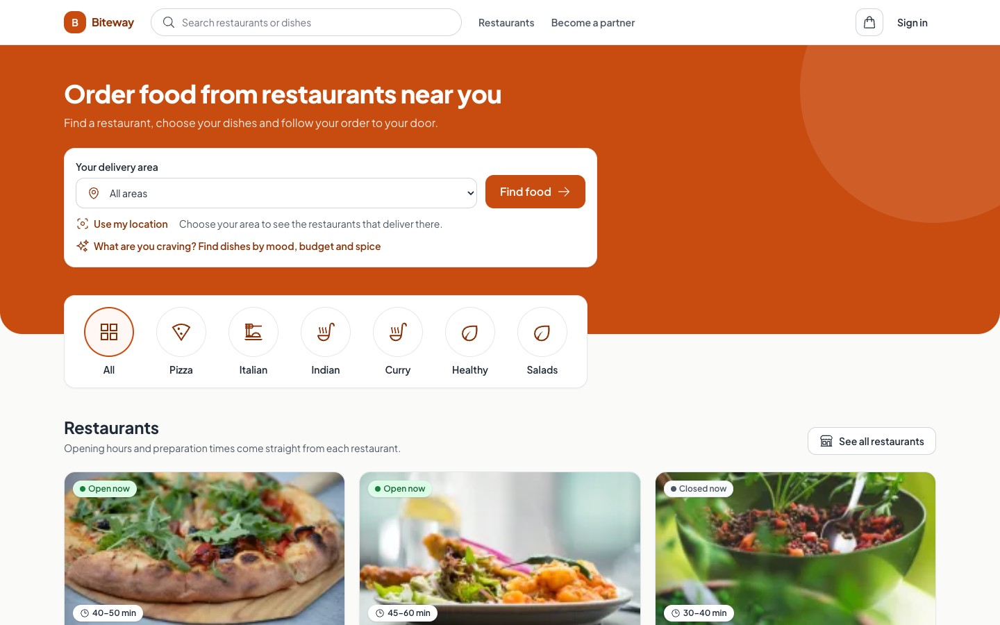
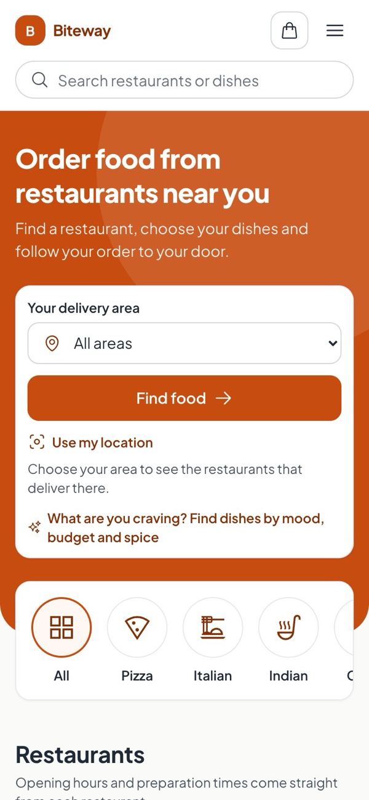
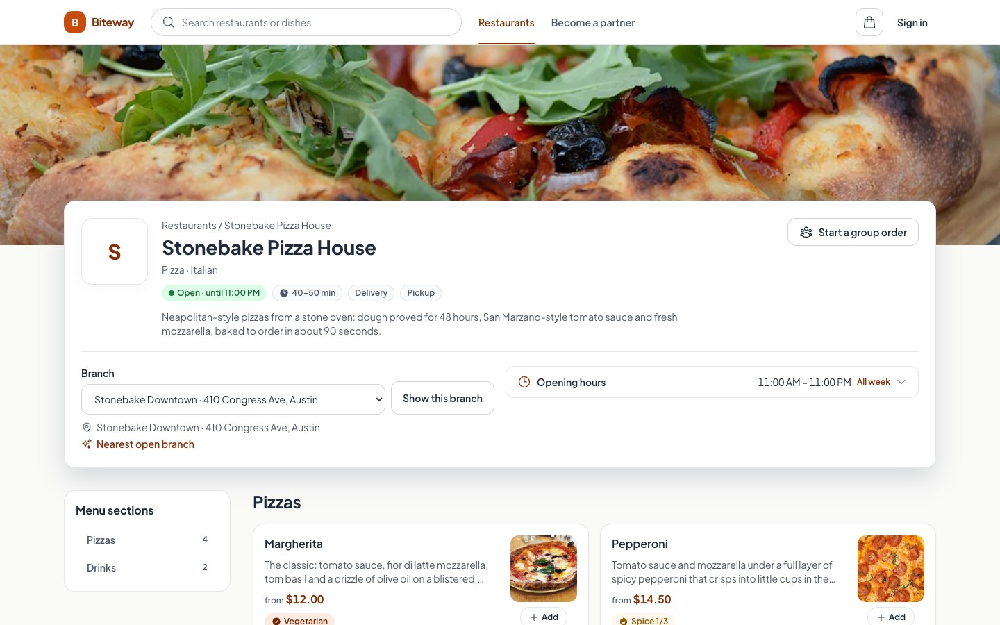
When all of a restaurant's branches are paused, its page says "Not taking orders now"; visitors can still look at the menu. Sold-out dishes carry a "Sold out" badge.
Signing in
Customers sign in at /login, or in the quick sign-in dialog at checkout:
- Enter their mobile number and press Text me a code.
- Enter the code from the text message and press Confirm and continue. A new number gets a new account.
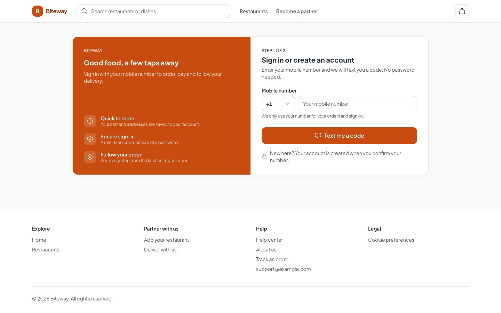
Continue with Google appears when Google sign-in is set up (Settings). Visitors can fill a cart before signing in (up to 30 dishes); the cart is kept when they sign in.
Cart and checkout
- A cart holds one restaurant's dishes. Adding a dish from another restaurant asks "Start a new cart?". When Customers can order from several restaurants at once is on, customers keep one cart per restaurant and can check them out together with one payment, or one at a time.
- Checkout has three steps: Your details, Delivery and options, and Payment.
- Depending on your settings and the restaurant, the customer chooses delivery, pickup or dine-in; the delivery address (saved, or a new one with its location, checked against your delivery areas); the delivery speed; as soon as possible or a time later; a tip for the rider; a note for the kitchen; no cutlery; and sending the order as a gift.
- The customer pays with cash or an online method, and can use their wallet balance first.
- Online payments open the provider's page. Afterwards the customer comes back to a page that says whether the payment went through, failed, or is still waiting, with Pay now to try again while it waits.
- The Order placed page links to the order.
Orders
Under Your account → Orders, customers see the orders on their way and their past orders. On an order's page they can:
- Follow its status as it changes, without reloading the page.
- See the rider on a live map while the rider has the delivery, and the delivery code to give the rider at the door (or the pickup code at the counter).
- Call the rider when calls are allowed (Settings → Ordering → Contact, or masked calls under Integrations → Calls between customer and rider), or send a message to the rider or the restaurant; report a message or block the rider.
- Answer a change the restaurant suggests, paying any extra.
- Cancel the order while it can still be cancelled, or pay an order that is waiting for payment.
- Open the receipt, download it as a PDF, and rate the order once it is delivered.
- Get help with the order from support.
- Report a problem with a delivered order (what went wrong, which dishes, a note and up to three photos) for 24 hours after delivery.
With a Pusher-compatible server set up on the main item (see "Live updates on a VPS" in its documentation), the order page, the live map and the chat update the moment something changes; otherwise they check every few seconds.
Track an order in the footer opens the signed-in customer's orders.
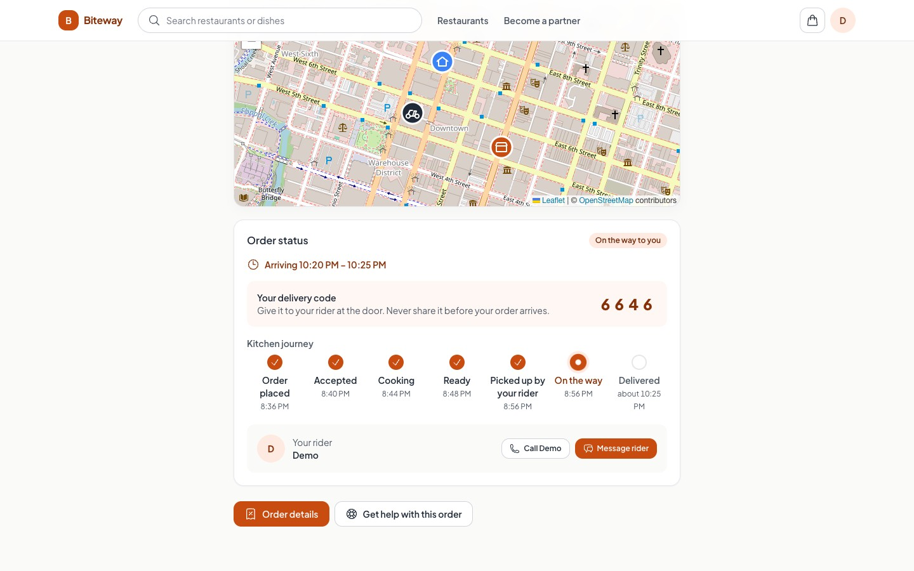
The customer's account
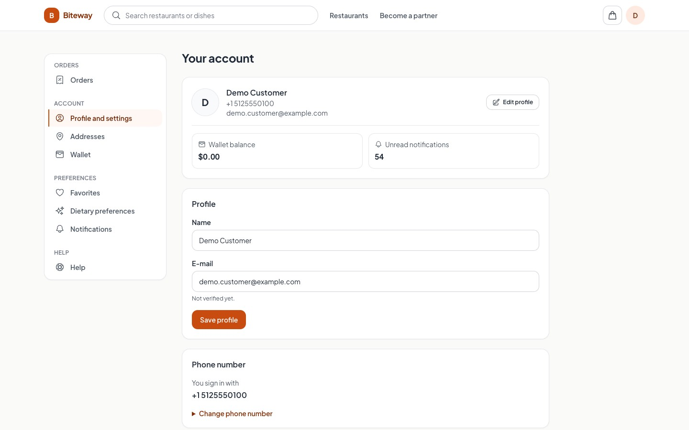
| Menu item | What the customer can do |
|---|---|
| Profile and settings | Change their name and email, change their phone number with a code, choose their language, download a copy of their data, sign out everywhere, and delete their account |
| Addresses | Add, edit, delete and choose a default address. Each address shows whether it is in your delivery area. |
| Wallet | See the balance and history, and add money |
| Invite friends | Share their code and link, and use a friend's code (when invites are on) |
| Delivery pass | Buy and renew the free-delivery pass from the wallet (when the pass is on) |
| Table bookings | See and cancel their bookings (when bookings are on) |
| Favorites | Their saved restaurants and dishes |
| Dietary preferences | Choose diets and allergens to avoid. Menus then mark the dishes that don't suit them, or hide them. |
| Notifications | Read their notifications |
| Help | Their messages to support |
Extras on the website
These features show on the website when they are switched on under Settings → Extras in the admin panel (Settings):
- Delivery times: restaurant cards and restaurant pages show how long the food takes. With Settings → Extras → Show delivery times as a range from the kitchen's load on in the admin panel, they show a range such as 25–40 min from how busy the kitchen is, checkout shows the range for the order (for pickup, the time until it is ready), and the order page shows a window such as Arriving 12:30 PM – 12:45 PM on the restaurant's clock, which moves with the order's live updates. Switched off, the website shows the preparation time as before.
- Branches and Saver: with Settings → Extras → Open each restaurant on its best branch for the customer on in the admin panel, a restaurant page opens on the branch that suits the customer and says why, for example Nearest open branch; the branch list still lets them switch. If the branch is too busy when they place the order and a sister branch can make it, checkout offers it, for example Stonebake Riverside can make this order — about 30–40 min, 1.8 km away, with Move my order (the cart moves to that branch and the new total is shown) and Keep waiting. With Give Saver deliveries a later window and batch them on, picking Saver at checkout prices the order again and the choice shows its window, such as Between 45 and 65 min, lower fee (the order summary reads Saver delivery: between 45 and 65 min), and the order page says Saver delivery next to the arrival window. See "Branch routing" and "Smart Saver" in the main item's documentation.
- What are you craving? with Settings → Extras → Help customers find food by mood, time, budget and spice on in the admin panel, a link under the home page's area picker opens a page (
/search?craving=1) with mood, budget and spice choices and the dishes open now in the chosen area, by restaurant, each with why it fits (for example Something light · Not spicy). When nothing fits at that hour, the page says Nothing fits right now. The page isn't indexed by search engines. See "Cravings" in the main item's documentation.
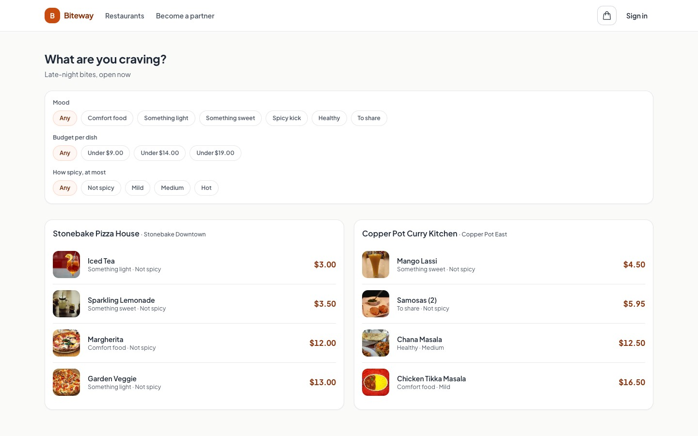
- Split-Pizza Studio: with Settings → Extras → Let customers add toppings to one half of a split pizza on, a half-and-half pizza's dish builder draws Your pizza: the customer picks the Left half and Right half flavors, and each topping takes Left, Whole or Right. The drawing follows every choice, a topping on one half shows its half price (the share is set in the admin), and the price is worked out once both halves are chosen. The cart, checkout and order pages read the pizza per half, for example Left: Pepperoni + Black olives · Right: Margherita + Mushrooms · Whole: Extra mozzarella. See "Split-Pizza Studio" in the main item's documentation.
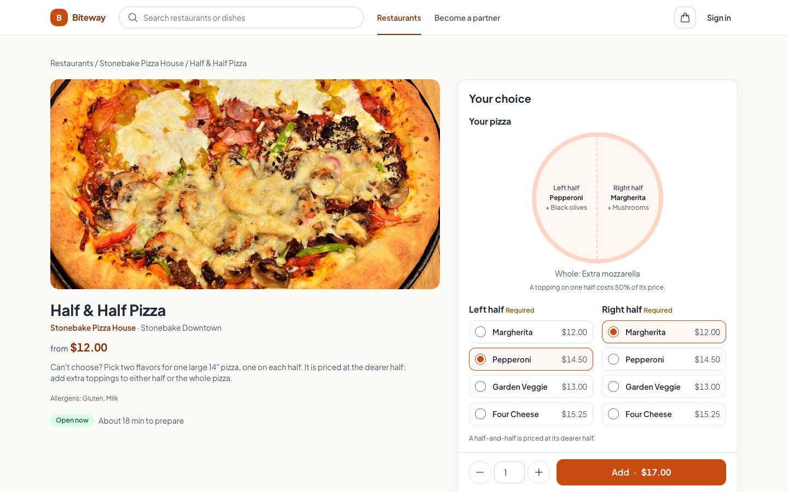
- Kitchen journey: with Show the order's journey from kitchen to door as it happens on, the order page and the tracking page show a Kitchen journey track: Order placed, Accepted, Cooking, Ready, Picked up by your rider (Collected for pickup), On the way and Delivered. Past stages show their time, the current one is highlighted, and the next ones show their expected time, such as about 7:40 PM. The track moves with the order's live updates. See "Live Kitchen Journey" in the main item's documentation.
- Group Meal Cart: with Let customers order together from one shared cart on, a signed-in customer starts one with Start a group order on a restaurant page and shares its link (Copy link). Friends who open the link (
/g/…) sign in if they need to, then Join. Everyone adds their own dishes with Add to group order, and the group page lists each member's dishes and subtotal with a badge (Adding dishes, Done after I'm done). Members can Leave group order and the host can Cancel group order. When everyone is done, the host locks the order and chooses who pays: I pay for everyone (card or cash) or Everyone pays their own, where each member pays their share online within the set minutes, with a countdown (Members pay by 7:45 PM). After the lock the badges read Host pays, Yet to pay, Paid or Dishes locked, members use Pay my share, and the host can Unlock for changes until someone has paid. Then the host places the one order. If the host places it before every share is paid, a dialog asks first and the host pays the rest. The group page updates live for everyone. See "Group Meal Cart" in the main item's documentation.
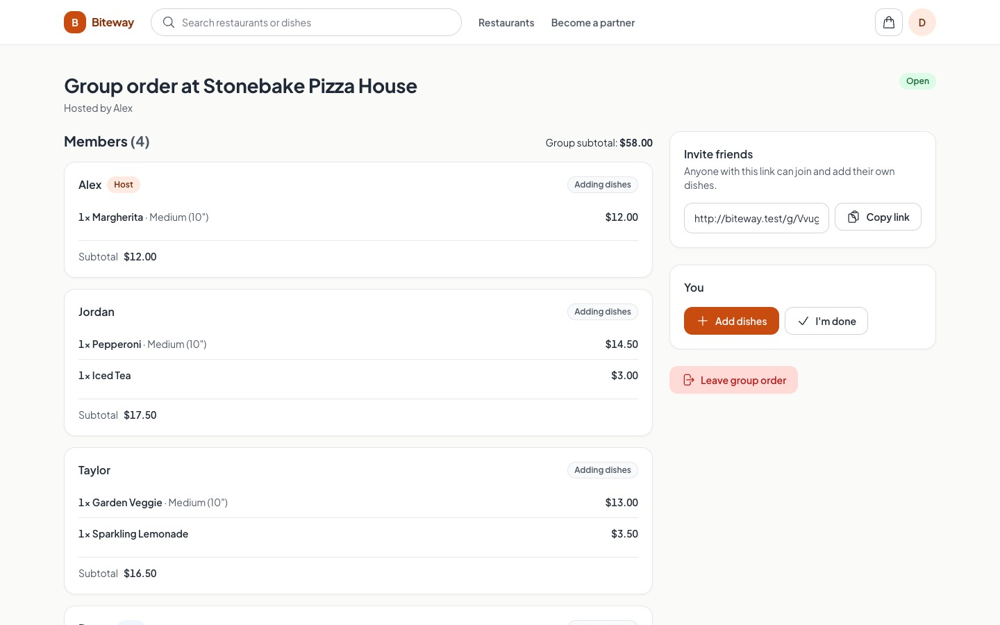
Languages
Visitors choose a language in the header or footer. Each language has its own address (?lang=bn, for example), so search engines can list every version. Arabic is shown right to left. The language a signed-in customer saves in their profile is also used for their texts and emails.
Cookies
On the first visit, a notice asks visitors to choose Necessary only or Accept all. Until they accept, the website sets only the cookies it needs to work: the session, the chosen language and this choice.
What you do in the admin panel
Day to day, you run the website from the main admin panel, as you do for the apps:
- Orders from the website appear under Orders, and support messages under Support.
- "Become a partner" requests appear under Applications. Approving a restaurant's request does not create the restaurant; add it under Restaurants as usual.
- Changes to restaurants, menus, areas and prices show on the website straight away.
Updating
A new version of the add-on is installed the same way as the first one: you upload it in Add-ons, then install it, which runs its database updates. Your settings, customers and orders are not touched.
Before you update
- Read the Changelog of the new version, and check which Biteway version it needs (see below).
- Take a database backup. The Add-ons page reminds you: "Take a database backup before installing an update."
- Keep a copy of the
biteway-backend/addons/customer-web/folder, so you can put the old files back if you need to.
Update in the admin panel
- Download the new version from CodeCanyon.
- Open Add-ons as Super Admin, choose the downloaded zip under Upload an add-on, and press Upload. The new files replace the old ones.
- The add-on's card shows Update ready. Press Install update straight away: until you do, the website is not served.
- The card shows On with the new Installed version.
- In the
biteway-backendfolder, runnpm run buildto build the new version's styles and scripts (Installation).
Update by copying the folder
- Replace the contents of
biteway-backend/addons/customer-web/with the newmain/biteway-customer-web/folder. Keep the folder namecustomer-web. - Open Add-ons and press Install update.
- Run
npm run buildin thebiteway-backendfolder.
Version rules
- An add-on can only be updated to a newer version. Uploading an older one is refused with "Version … is older than the installed …".
- Each version names the oldest Biteway it works with. Version 1.0.0 needs Biteway 1.0.0 or newer; the card shows it as Needs Biteway.
- If your Biteway is too old, the card shows Needs a newer Biteway and the add-on stays off. Update Biteway first under Updates in the admin panel, then install the add-on update.
- Updating Biteway itself never changes installed add-ons. After a Biteway update, open Add-ons to check that the website still shows On.
If something goes wrong
- If installing stops with "The add-on's database update failed", the message includes the database error. The website stays off until the update is installed. Fix the cause and press Install update again, or restore your database backup and the old
addons/customer-webfolder: the card then shows On with the old version. - If the pages look unstyled after an update, run
npm run buildin thebiteway-backendfolder. If they still do, press Switch off and then Switch on: switching on copies the styles and scripts again.
Credits and licenses
The add-on's own code and design are covered by the Envato Market license you bought. Everything below is third-party: it keeps its own license, and every license allows commercial use and redistribution. The license notices are in LICENSES.txt inside the add-on.
Included in the built files
The add-on's built styles and scripts (made by npm run build) contain code from these packages. Pages load the map and Firebase parts only when they need them.
| Package | Version | Used for | License |
|---|---|---|---|
| Alpine.js | 3.17.5 | The interactive parts of the pages | MIT |
| Tailwind CSS | 4.3.3 | The stylesheet | MIT |
| Leaflet | 1.9.4 | The live delivery map with map tiles | BSD-2-Clause |
Firebase JavaScript SDK (@firebase/app, @firebase/auth) |
0.16.6, 1.13.10 | Phone sign-in when Firebase Phone Authentication is used | Apache-2.0 |
| idb (included with the Firebase SDK) | 7.1.1 | Firebase's storage in the browser | ISC |
Fonts
| Font | Used in | License |
|---|---|---|
Plus Jakarta Sans (from @fontsource/plus-jakarta-sans 5.3.0) |
All text on the website. The font files are in public/build/. |
SIL Open Font License 1.1 |
Icons
| Icons | Used in | License |
|---|---|---|
Heroicons (through the main item's blade-ui-kit/blade-heroicons) |
Icons across the website | MIT |
Material Symbols (19 icons, from @material-symbols/svg-400 0.23.0, as inline SVG) |
The cuisine icons on the home page | Apache-2.0 |
Maps
The live delivery map shows tiles from the tile server set under Integrations → Maps: OpenStreetMap's by default, with the attribution "© OpenStreetMap contributors" on the map. OpenStreetMap's own server is for light use only; a busy platform should use a tile provider. Google Maps is optional and has its own terms.
Loaded from their providers
These are not part of the add-on. The browser loads them from the provider, and only when you switch them on:
| Service | When |
|---|---|
| Google Maps JavaScript API | Maps set to Google Maps, with a browser key |
| Google Identity Services | "Continue with Google" is switched on |
| Cloudflare Turnstile, hCaptcha or Google reCAPTCHA | A CAPTCHA is chosen for browser sign-in |
| Google reCAPTCHA (loaded by Firebase) | Sign-in codes are sent with Firebase Phone Authentication |
Each service has its own terms; mention the ones you use in your privacy policy.
PHP packages
The add-on ships no PHP packages of its own. It runs on the main item's packages (Laravel and the others), which are listed with their licenses in the Biteway main item's documentation under "Credits and licenses".
Troubleshooting and FAQ
Look first at the add-on's card under Add-ons in the admin panel: its status, and any error shown on it. For server errors, the newest file in storage/logs/ of biteway-backend names the real cause.
Installing
"The zip has no addon.json at its top level."
The zip is not the add-on: upload the zip you downloaded from CodeCanyon as it is, or a zip of the main/biteway-customer-web/ folder.
"The zip contains an unsafe path." Some zip tools write Windows-style paths. Zip the folder again with your system's own zip (Finder's Compress, or Send to → Compressed (zipped) folder on Windows).
The upload fails, or the page says the file is too big.
Your server's PHP upload limit (upload_max_filesize and post_max_size) is lower than the zip. Raise it, or copy the folder to the server instead (Installation).
The card says "Can't be used" with "The folder must be named after the add-on slug (customer-web)."
The copied folder kept its original name. Rename addons/biteway-customer-web to addons/customer-web.
The card says "Needs a newer Biteway". This version of the add-on needs a newer main item. Update Biteway under Updates, then press Install and switch on.
Uploading or installing fails with a "Permission denied" error in the log.
The web server can't write to biteway-backend/addons/ or biteway-backend/public/addons/. Make both writable by the web server, the same way as storage/ in the main item's installation.
The website
https://your-domain/ still opens the admin panel, or the website's pages show "Not Found".
- In Add-ons, the card must show On. If it shows Not installed, Update ready or Off, press Install and switch on, Install update or Switch on.
- If you cache routes on the server, run
php artisan optimizeagain after switching the add-on on or off.
The pages have no styles, or the buttons and menus don't respond.
The styles and scripts are not built yet: run npm run build in the biteway-backend folder (Installation); the add-on's card in Add-ons says so until you do. If they are built, make public/addons/ writable, then press Switch off and Switch on in Add-ons to copy them again. Also check that APP_URL in .env is the address you open the site with.
Customers don't get their sign-in code. The website sends codes through the main item. Check Settings → Sign-in → Phone codes → Text message provider and its keys under Integrations; the provider's own dashboard shows whether the message was sent and why it failed. With Firebase Phone Authentication, the Firebase project ID and Firebase Web API key under Integrations → Live updates must be filled in, and your website's domain must be in Firebase Authentication's authorized domains.
"Too many attempts. Please wait … seconds and try again." The main item limits how often a code can be asked for and tried. Wait for the time shown.
The CAPTCHA doesn't show, or every sign-in fails the security check. Check that Site key and Secret key under Integrations → CAPTCHA belong to the provider chosen under Settings → Sign-in → Security check, and that your website's domain is allowed in the provider's dashboard.
"Continue with Google" is missing. It shows only when Settings → Sign-in → Sign in with Google is on and Integrations → Google and Apple sign-in → Google web client ID is filled in. If the button shows but fails, add your website's address to that client's authorized JavaScript origins in Google Cloud.
The live map doesn't show on an order.
- The map appears only while a rider has the delivery, and hides once it is handed over. Pickup and dine-in orders have no map.
- With Google Maps chosen under Integrations → Maps, the website needs the Google Maps browser key, and the key must allow your website's address. Without a key, the website uses the map tiles.
- A blank map with tiles means the Map tile address is wrong or the tile server refuses your site.
A restaurant's own address doesn't verify.
- The card shows the exact records. The TXT record must have exactly that name and value; DNS changes can take a few hours.
- "Enter a web address you own, like order.yourrestaurant.com." means the address is your platform's own address, one of its subdomains, or not a valid address.
- "Another restaurant already uses this address." means another restaurant verified it first.
- Verified but the address doesn't open: the CNAME (or A) record is missing, or your hosting doesn't answer that address with the Biteway site or has no HTTPS certificate for it.
- Record missing: the daily check no longer finds the TXT record. Add it back and press Check DNS now.
Checkout says "No payment method is available right now." No payment method is switched on and filled in under Payments. Switch on at least one, with its keys.
A payment stays "Waiting for the payment". The gateway could not reach your webhook. Copy the webhook URL shown on the Payments page into the gateway's dashboard exactly, and make sure the site has HTTPS. The customer can press Pay now on the waiting page to try again.
Checkout says "This restaurant is not taking orders right now." The branch can't take an order now. Check its opening hours, status and services under Restaurants.
"Use my location" doesn't work. Browsers only share the location on HTTPS addresses, and only when the visitor allows it. The visitor can choose their area from the list instead.
Questions
Do I need the Customer Website for Biteway to work?
No. Without it, customers order in the customer app, and https://your-domain/ opens the admin panel.
Does switching the add-on off or removing it delete anything? No. Customers, orders and wallets belong to the main item and stay. Removing deletes only the add-on's files and its entry in Add-ons.
Where is the website served?
At the root of your Biteway address (APP_URL), next to the admin panel at /admin. Restaurants can also each have their own address for their storefront (Settings).
Can I change the website's texts?
Yes, in the admin panel: Languages → Texts, tab Biteway Customer Website, rewords any text in any language, and an update keeps your changes. The add-on's own files (lang/en, lang/bn and lang/ar inside addons/customer-web) are replaced by each update, so don't edit them.
Can I add Google Analytics or another tracking script? The add-on has no setting for it. Optional scripts must only run after a visitor presses Accept all in the cookie notice; adding one means editing the add-on's layout.
Support
Support is given through CodeCanyon: open the Support tab on the Biteway Customer Website item page and send your question there. Item support covers questions about how the add-on works, help with problems and bugs in it, and help with the third-party parts included with it. It does not cover installing it on your server for you, customizing it, or building new features.
Questions about the main item itself (the admin panel, the apps, payments or text messages in general) belong on the Biteway item page.
What to send
So we can help quickly, include:
- The add-on's version and the Biteway version: Add-ons in the admin panel shows the add-on's Installed version, and the admin panel shows the Biteway version at the bottom of the menu and on the Health page.
- The add-on's status on its card in Add-ons, and any error shown there.
- What you did, what you expected, and what happened instead, with screenshots and the address of the page.
- For a server problem: the error from the newest file in
storage/logs/ofbiteway-backend. - For a problem in the browser: the browser and its version, and any error in the browser's console.
Never send passwords, API keys, purchase codes, .env files or your customers' personal data.
Before you write
Many questions are answered in Troubleshooting and FAQ. Most website settings live in the main item, so Settings shows where to look for each one.
Changelog
1.0.0: first release (17 November 2026)
First release. Needs Biteway 1.0.0 or newer.
- Home page: choose a delivery area from the list or with the browser's location, browse by cuisine, see the restaurants in the area, "How it works" and app links.
- Restaurant list with the app's filters (area, cuisine, diet, service, open now), and search with a page for when nothing matches.
- Restaurant pages with opening hours, branches, the menu by section, diet and allergen tags, and each customer's dietary fit. A restaurant whose branches are all paused says it isn't taking orders now, and sold-out dishes show a "Sold out" badge.
- Dish pages with sizes, options, half-and-half and a live price, also opened in a dialog from the menu. Favorite hearts on restaurants.
- Phone sign-in with a one-time code, on its own page or in a quick dialog, with the optional CAPTCHA, Firebase Phone Authentication and "Continue with Google".
- Cart: visitors' carts are kept until they sign in, a "Start a new cart?" question for another restaurant, and one cart per restaurant with a single checkout when ordering from several restaurants is on.
- Checkout in three steps: delivery, pickup or dine-in, the address with its location and delivery-area check, speed, ordering for later, tip, kitchen note, no cutlery, gift, payment and wallet. Online payments come back to one page that shows the result and lets the customer pay again.
- Orders: the order list, the order page with its live status and timeline, answering a restaurant's suggested change, cancelling, paying, the receipt with a PDF, and rating.
- Live delivery map while a rider has the order, with map tiles or Google Maps, "last updated" when the position is old, and the delivery code to give the rider at the door.
- Calling the rider through the platform's number when calls are masked, so the rider's number is never shown, and order chat with the rider or the restaurant, with reporting and blocking.
- Help center with messages to support.
- Account: profile, phone number change with a code, language, addresses with a delivery-area check, wallet with top-ups, favorites, dietary preferences, notifications, table bookings, invites, the free-delivery pass, data download, signing out everywhere and deleting the account.
- "Become a partner" pages for restaurants and riders, and an about page with the cities and areas served.
- Restaurants' own web addresses: on a verified address, the restaurant's page is the home page.
- Search engines: page titles and descriptions, language versions, social-sharing tags, structured data for restaurants and dishes, a sitemap, and robots.txt rules that keep the cart, checkout, account and sign-in pages out of search engines.
- Site layout with a language menu (Arabic right to left), a cookie notice and a 404 page in the site's look. English, Bangla and Arabic.
- The order page, the live map and the chat listen on the main item's Pusher-compatible server (Pusher, Soketi or Reverb) when one is set up, and check every few seconds while it is not reachable.
- Delivery times as a range (for example 25–40 min) on restaurant cards, restaurant pages and at checkout, and an arrival window such as "Arriving 12:30 PM – 12:45 PM" on the order page, when Settings → Extras → Show delivery times as a range from the kitchen's load is on. English, Bangla and Arabic.
- Branch routing: with Settings → Extras → Open each restaurant on its best branch for the customer on, the restaurant page opens on the suggested branch and says why ("Nearest open branch", "This branch has your dishes", "Less busy branch", "Only branch open now"), with the branch switcher as before; a busy branch at checkout offers a sister branch that can make the order, with Move my order and Keep waiting.
- Smart Saver: with Give Saver deliveries a later window and batch them on, the Saver choice at checkout shows its window (for example "Between 45 and 65 min, lower fee") and a Saver order's page says Saver delivery next to its arrival window. English, Bangla and Arabic.
- Split-Pizza Studio: with Settings → Extras → Let customers add toppings to one half of a split pizza on, each topping of a half-and-half pizza takes Left, Whole or Right in the order builder, with a two-half pizza showing each half's flavor and toppings and the half price on each topping; the cart, checkout and order pages read, for example, "Left: Pepperoni + Olives · Right: Margherita · Whole: Extra cheese". English, Bangla and Arabic.
- Live Kitchen Journey: with Show the order's journey from kitchen to door as it happens on, the order page shows the order's stages in one track, with the time of past stages, the current stage highlighted (still for visitors who ask for less motion) and "about 12:25 PM" for the next ones when a time is expected, refreshed with live updates. English, Bangla and Arabic.
- Group Meal Cart: with Settings → Extras → Let customers order together from one shared cart on, the invite link
/g/…opens the group cart on the website (or the customer app on a phone that has it), where signed-in customers join, add their own dishes and pay their share. See "Group Meal Cart" in the main item's documentation. English, Bangla and Arabic. - Smart Cravings Discovery: with Settings → Extras → Help customers find food by mood, time, budget and spice on, the home page links to a "What are you craving?" page with mood, budget and spice choices and the dishes open now in the chosen area by restaurant, each with why it fits. English, Bangla and Arabic.